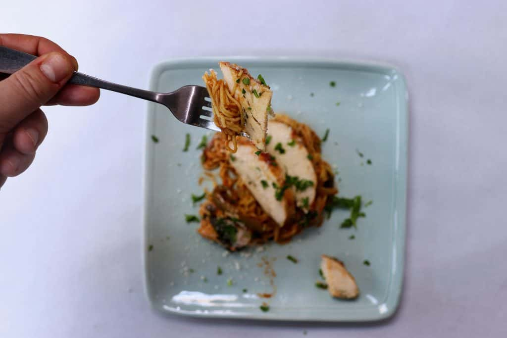

Slow Cooker Chicken Pasta

This is a convenient recipe to make a complete meal in your slow cooker. Chicken, veggies, a yummy tomato sauce, and noodles all cook together in the slow cooker to make an easy and yummy dinner or lunch.
For this recipe, we used our Italian Romano marinated chicken breasts, which add a bit extra Italian flavor to the recipe, but you can use a plain chicken breast, or another marinated flavor, if you like.
Ingredients:
- 1/2 cup Water
- 1 Tbsp Flour
- 2 LGCM Boneless Skinless Chicken Breast (use Italian Romano breasts for more flavor)
- 1 can Diced Tomatoes (14.5 oz can)
- 2 Yellow Onion (undrained)
- 2 Green Pepper (sliced)
- 2 tsp Italian Seasoning (sliced)
- 1 tsp Salt
- 1 tsp Black Pepper
- 2.5 cup Chicken Broth
- 12 oz Tomato Paste
- 2 cup Baby Spinach
- 8 oz Spaghetti
- Parmesan Cheese (use Angel Hair or thin Spaghetti noodles)
- Parsley (grated)
Instructions
- Add the water and flour to your slow cooker. Whisk together to combine. Add the chicken breast, diced tomato, onion, green pepper, Italian seasoning, salt, black pepper, and chicken broth to the slow cooker. Stir to combine, then cover, and cook on high for 4 hours.
- After 4 hours, add the tomato paste, baby spinach, and noodles to the mixture. Stir again, making sure that the noodles are covered with liquid. Cover, and cook for another 30 minutes on high, until the noodles are cooked.
- Remove the chicken breasts and place on a cutting board. Mix the noodles, veggies, and sauce together, cover, and leave on warm while you slice the chicken breast. Serve slices of chicken on top of the noodle mix with grated parmesan cheese and fresh parsley on top for extra flavor. Enjoy!